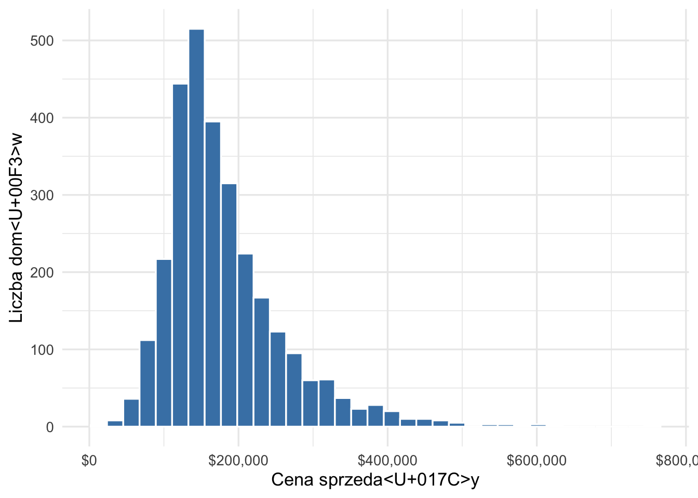
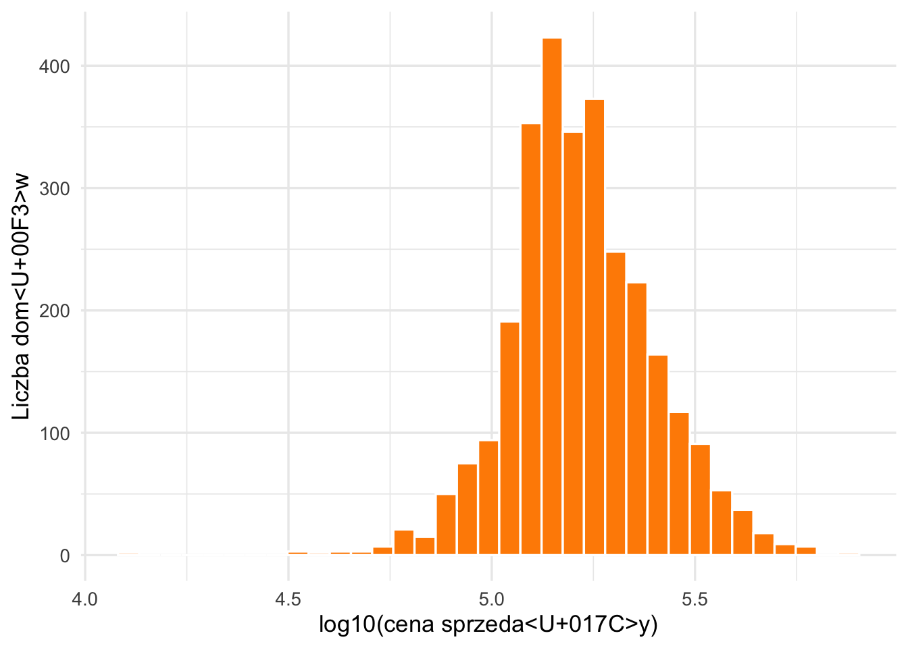
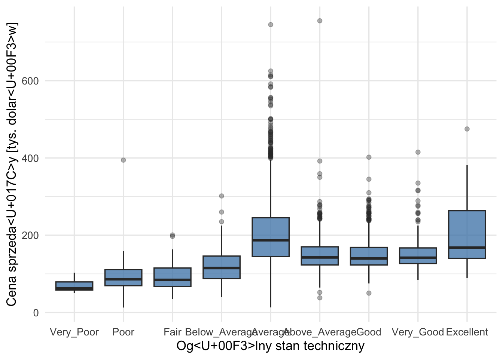
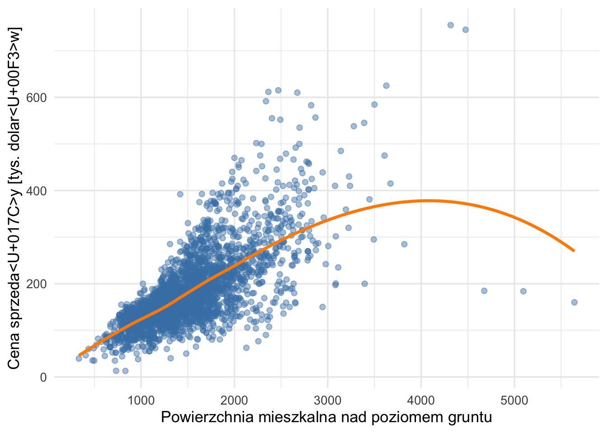
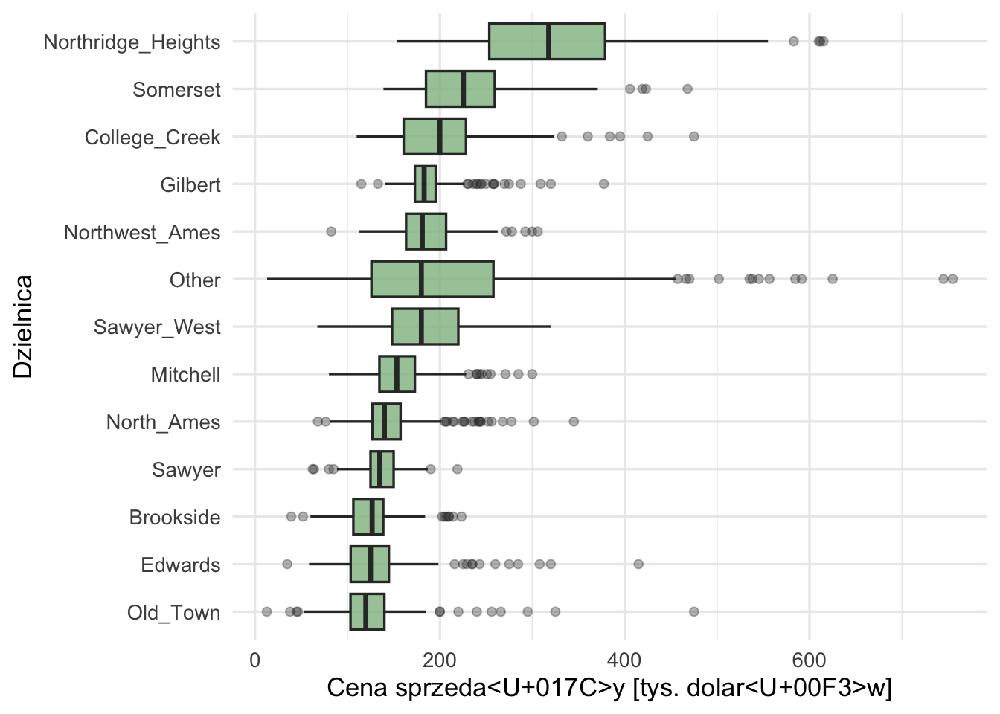
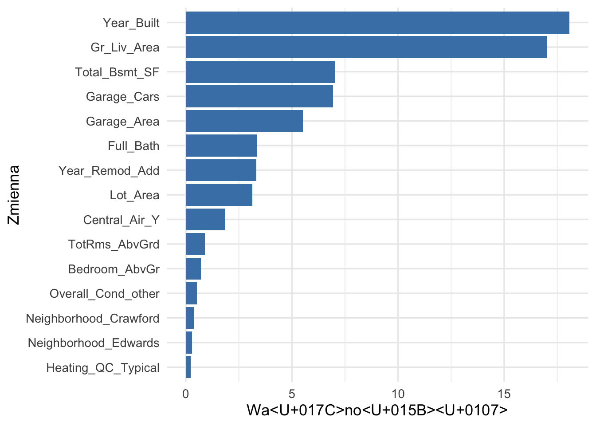
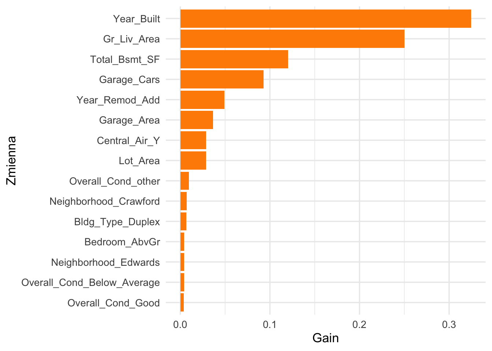

W tym rozdziale pokażemy kompletny przykład problemu badawczego, w którym celem jest predykcja wartości liczbowej na podstawie wielu cech opisujących obiekt. Tym razem nie będziemy używać pojedynczego modelu liniowego ani pojedynczego drzewa decyzyjnego. Zamiast tego porównamy trzy metody zespołowe: bagging, las losowy oraz XGBoost.
Metody zespołowe są szczególnie użyteczne wtedy, gdy zależność między zmienną objaśnianą a predyktorami jest złożona, nieliniowa i może zależeć od interakcji między zmiennymi. Zamiast zakładać prostą postać funkcji regresji, modele te budują wiele słabszych modeli bazowych i łączą ich przewidywania w jedną predykcję końcową.
W przykładzie skorzystamy ze zbioru ames z pakietu modeldata, zawierającego informacje o sprzedaży domów w mieście Ames w stanie Iowa. Na podstawie cech technicznych i lokalizacyjnych nieruchomości będziemy przewidywać cenę sprzedaży domu.
AdnotacjaCo będzie wynikiem tej analizy?
Na końcu będziemy umieli odpowiedzieć na pytanie, czy złożone modele drzewiaste poprawiają jakość predykcji cen domów oraz czym różnią się bagging, las losowy i XGBoost z punktu widzenia praktycznej analizy danych.
Formułowanie celu i problemów badawczych
Cel badawczy
Chcemy zbudować modele predykcyjne, które na podstawie cech domu będą przewidywać jego cenę sprzedaży. Problem ma charakter regresyjny, ponieważ zmienna objaśniana jest liczbowa i wyrażona w dolarach.
W analizie nie interesuje nas wyłącznie uzyskanie możliwie małego błędu predykcji. Równie ważne jest porównanie trzech rodzin modeli zespołowych i zrozumienie, w jaki sposób różnią się one mechanizmem uczenia.
WażneJasne określenie celu
Cel predykcyjny: przewidywanie ceny sprzedaży domu na podstawie cech lokalizacyjnych, technicznych i jakościowych nieruchomości.
Zmienna objaśniana i zmienne objaśniające
Zmienna objaśniana (zależna, przewidywana):Sale_Price, czyli cena sprzedaży domu.
Zmienne objaśniające (predyktory): cechy lokalizacyjne, techniczne i jakościowe domu (m.in. powierzchnia mieszkalna, stan techniczny, rok budowy, garaż, dzielnica); pełne zestawienie znajduje się w tabeli w części Opis danych.
Problem badawczy
Interesuje nas odpowiedź na następujące pytania:
Czy cechy nieruchomości pozwalają trafnie przewidywać cenę sprzedaży domu?
Która z trzech metod zespołowych daje najmniejszy błąd predykcji: bagging, las losowy czy XGBoost?
Jak zmienia się jakość predykcji, gdy przechodzimy od prostego uśredniania drzew do modeli z losowym doborem predyktorów i wzmacnianiem gradientowym?
Które zmienne są najważniejsze dla końcowej predykcji?
Jak interpretować wyniki modelu, który jest skuteczny predykcyjnie, ale mniej przejrzysty niż pojedyncze drzewo decyzyjne?
Jednostka obserwacji
Pojedynczą obserwacją jest tutaj jedna transakcja sprzedaży domu. Każdy wiersz tabeli danych opisuje jedną nieruchomość oraz jej cenę sprzedaży.
Metodyka
Dlaczego metody zespołowe?
Pojedyncze drzewo decyzyjne jest łatwe do interpretacji, ale często bywa niestabilne. Niewielka zmiana danych treningowych może prowadzić do innego pierwszego podziału, a później do zupełnie innej struktury drzewa. To oznacza dużą wariancję modelu.
Metody zespołowe zmniejszają ten problem przez łączenie wielu modeli. Zamiast opierać predykcję na jednym drzewie, budujemy wiele drzew i agregujemy ich wyniki. W regresji najczęściej oznacza to uśrednianie predykcji:
gdzie \(B\) oznacza liczbę modeli bazowych, a \(\hat{f}_b(x)\) jest predykcją \(b\)-tego drzewa dla obserwacji o cechach \(x\).
Najważniejsza intuicja jest następująca: pojedyncze drzewa mogą być dość zmienne, ale średnia z wielu zróżnicowanych drzew zwykle jest bardziej stabilna.
Bagging
Bagging, czyli bootstrap aggregating, polega na wielokrotnym losowaniu prób bootstrapowych ze zbioru treningowego, dopasowaniu osobnego drzewa do każdej z tych prób, a następnie uśrednieniu predykcji.
Procedura wygląda następująco:
Losujemy ze zwracaniem próbę bootstrapową ze zbioru treningowego.
Dopasowujemy drzewo regresyjne do tej próby.
Powtarzamy kroki 1-2 wiele razy.
Dla nowej obserwacji liczymy średnią predykcji ze wszystkich drzew.
Bagging redukuje wariancję w porównaniu z pojedynczym drzewem. Nie zmienia jednak tego, że każde drzewo może korzystać z tego samego zestawu bardzo silnych predyktorów. Jeśli jeden predyktor dominuje, wiele drzew może stać się do siebie podobnych.
Las losowy
Las losowy rozwija ideę baggingu. Oprócz losowania obserwacji w kolejnych próbach bootstrapowych wprowadza także losowość na poziomie predyktorów. Przy każdym podziale drzewa algorytm rozważa tylko losowo wybrany podzbiór zmiennych.
Dzięki temu drzewa w lesie są mniej skorelowane ze sobą. Jeżeli poszczególne drzewa popełniają różne błędy, ich uśrednienie daje bardziej stabilną predykcję.
Najważniejszym parametrem odróżniającym las losowy od zwykłego baggingu jest mtry, czyli liczba predyktorów rozważanych przy pojedynczym podziale. Małe mtry zwiększa różnorodność drzew, ale może osłabić pojedyncze drzewa. Duże mtry upodabnia las losowy do baggingu.
XGBoost
XGBoost należy do rodziny metod wzmacniania gradientowego. W przeciwieństwie do baggingu i lasu losowego drzewa nie są budowane niezależnie. Powstają sekwencyjnie: każde kolejne drzewo ma poprawiać błędy popełniane przez dotychczasowy model.
W uproszczeniu model końcowy ma postać sumy wielu małych drzew:
gdzie \(\hat{g}_m(x)\) oznacza kolejne drzewo dodane do modelu, \(M\) jest liczbą drzew, a \(\nu\) to współczynnik uczenia (learning rate). Mała wartość \(\nu\) powoduje, że każde drzewo wnosi niewielką korektę, co zwykle wymaga większej liczby drzew, ale może poprawiać zdolność uogólniania.
XGBoost bywa bardzo skuteczny predykcyjnie, ale wymaga ostrożniejszego strojenia parametrów niż bagging i las losowy. Zbyt głębokie drzewa, zbyt duża liczba iteracji albo zbyt wysoki współczynnik uczenia mogą prowadzić do przeuczenia.
WskazówkaBagging, las losowy i XGBoost w jednym zdaniu
Bagging uśrednia wiele drzew zbudowanych na różnych próbach danych, las losowy dodatkowo losuje predyktory przy podziałach, a XGBoost buduje drzewa sekwencyjnie, tak aby kolejne drzewa poprawiały błędy poprzednich.
Ocena jakości modelu
Ponieważ analizujemy problem regresyjny, jako główne miary jakości wykorzystamy:
RMSE - pierwiastek średniego błędu kwadratowego,
MAE - średni błąd bezwzględny,
\(R^2\) - odsetek zmienności zmiennej objaśnianej wyjaśniony przez model.
W analizie będziemy modelować logarytm ceny. Jest to częsty zabieg przy cenach nieruchomości, ponieważ rozkład cen jest zwykle prawostronnie skośny, a błędy względne są bardziej naturalne niż błędy wyrażone w bezwzględnych dolarach.
Procedura analityczna
W tym przykładzie przyjmiemy następującą procedurę:
Przygotować dane i wybrać zestaw predyktorów.
Przeprowadzić eksploracyjną analizę zależności między ceną a kluczowymi cechami.
Podzielić dane na zbiór treningowy i testowy.
Przygotować wspólny schemat przetwarzania danych.
Dobrać parametry trzech modeli w walidacji krzyżowej.
Porównać modele na zbiorze testowym.
Zinterpretować najważniejsze predyktory i sformułować wnioski.
Poniżej zestawiono zmienne wykorzystywane w analizie.
Kod
opis_zmiennych <-tibble(zmienna =c("Sale_Price", "log_cena", "Neighborhood", "Bldg_Type", "House_Style","Overall_Cond", "Year_Built", "Year_Remod_Add", "Total_Bsmt_SF","Gr_Liv_Area", "Full_Bath", "Bedroom_AbvGr", "Heating_QC","TotRms_AbvGrd", "Garage_Area", "Garage_Cars", "Exter_Cond","Central_Air", "Lot_Area" ),rola =c("zmienna objaśniana w skali oryginalnej","zmienna objaśniana używana w modelowaniu",rep("zmienna objaśniająca", 17) ),opis =c("cena sprzedaży domu w dolarach","logarytm dziesiętny ceny sprzedaży","dzielnica","typ budynku","styl domu","ogólny stan techniczny","rok budowy","rok remontu lub przebudowy","całkowita powierzchnia piwnicy","powierzchnia mieszkalna nad poziomem gruntu","liczba pełnych łazienek","liczba sypialni nad poziomem gruntu","jakość ogrzewania","liczba pokoi nad poziomem gruntu","powierzchnia garażu","pojemność garażu wyrażona liczbą samochodów","stan materiałów zewnętrznych","klimatyzacja centralna","powierzchnia działki" ))opis_zmiennych |>gt() |>tab_caption("Zmienne użyte w analizie")
Zmienne u<U+017C>yte w analizie
zmienna
rola
opis
Sale_Price
zmienna obja<U+015B>niana w skali oryginalnej
cena sprzeda<U+017C>y domu w dolarach
log_cena
zmienna obja<U+015B>niana u<U+017C>ywana w modelowaniu
Zanim zbudujemy modele, warto sprawdzić rozkład ceny oraz relacje między ceną a kilkoma najważniejszymi cechami. Modele zespołowe dobrze radzą sobie z nieliniowościami, ale analiza eksploracyjna pozostaje potrzebna: pozwala zrozumieć skalę problemu i wykryć zależności, które model będzie później wykorzystywał.
Rozkład ceny sprzedaży
Kod
dane |>ggplot(aes(x = Sale_Price)) +geom_histogram(bins =35, fill ="steelblue", color ="white") +scale_x_continuous(labels = scales::label_dollar()) +labs(x ="Cena sprzedaży", y ="Liczba domów") +theme_minimal(base_size =13)

Rozkład ceny sprzedaży domów
Rozkład ceny jest prawostronnie skośny: większość domów znajduje się w niższym i średnim zakresie cenowym, natomiast niewielka liczba nieruchomości jest wyraźnie droższa. To uzasadnia modelowanie logarytmu ceny, ponieważ na tej skali rozkład jest zwykle bardziej symetryczny.
Kod
dane |>ggplot(aes(x = log_cena)) +geom_histogram(bins =35, fill ="darkorange", color ="white") +labs(x ="log10(cena sprzedaży)", y ="Liczba domów") +theme_minimal(base_size =13)

Rozkład logarytmu ceny sprzedaży
Cena a stan techniczny
Kod
dane |>mutate(Overall_Cond =factor(Overall_Cond)) |>ggplot(aes(x = Overall_Cond, y = cena_tys)) +geom_boxplot(fill ="steelblue", alpha =0.75, outlier.alpha =0.35) +labs(x ="Ogólny stan techniczny",y ="Cena sprzedaży [tys. dolarów]" ) +theme_minimal(base_size =13)

Cena sprzedaży a ogólny stan techniczny
Wykres pokazuje związek między ogólnym stanem technicznym a ceną. Zależność nie musi być idealnie liniowa: przejście ze stanu przeciętnego do dobrego może mieć inny efekt cenowy niż przejście ze stanu dobrego do bardzo dobrego. Właśnie tego typu nieliniowości dobrze uzasadniają zastosowanie modeli drzewiastych.
Cena a powierzchnia mieszkalna
Kod
dane |>ggplot(aes(x = Gr_Liv_Area, y = cena_tys)) +geom_point(alpha =0.45, color ="steelblue") +geom_smooth(method ="loess", se =FALSE, color ="darkorange") +labs(x ="Powierzchnia mieszkalna nad poziomem gruntu",y ="Cena sprzedaży [tys. dolarów]" ) +theme_minimal(base_size =13)

Cena sprzedaży a powierzchnia mieszkalna
Powierzchnia mieszkalna ma wyraźny dodatni związek z ceną, ale rozrzut cen rośnie wraz z powierzchnią. Oznacza to, że sama powierzchnia nie wystarcza do dobrego przewidywania ceny. Potrzebne są dodatkowe informacje o jakości, lokalizacji i cechach technicznych domu.
Cena a lokalizacja
Kod
dane |>mutate(Neighborhood =fct_lump_n(Neighborhood, n =12),Neighborhood =fct_reorder(Neighborhood, cena_tys, median) ) |>ggplot(aes(x = Neighborhood, y = cena_tys)) +geom_boxplot(fill ="darkseagreen", alpha =0.8, outlier.alpha =0.35) +coord_flip() +labs(x ="Dzielnica",y ="Cena sprzedaży [tys. dolarów]" ) +theme_minimal(base_size =13)

Cena sprzedaży w wybranych dzielnicach
Lokalizacja jest jednym z najważniejszych czynników cenotwórczych. W praktyce oznacza to, że model musi umieć wykorzystać zarówno zmienne liczbowe, jak i jakościowe. W dalszej części wykładu zmienne jakościowe zostaną zakodowane za pomocą zmiennych zero-jedynkowych.
Przygotowanie danych do modelowania
W analizie predykcyjnej konieczne jest oddzielenie danych wykorzystywanych do uczenia od danych przeznaczonych do końcowej oceny. Zbiór testowy nie będzie uczestniczył ani w dopasowaniu modeli, ani w doborze parametrów.
W modelowaniu wykorzystamy logarytm ceny jako zmienną objaśnianą. Z predyktorów usuwamy oryginalną cenę oraz pomocniczą zmienną cena_tys, ponieważ zawierają bezpośrednią informację o celu predykcji.
Ten sam schemat przygotowania danych zostanie użyty we wszystkich trzech modelach. Dzięki temu porównanie będzie dotyczyło przede wszystkim metody modelowania, a nie różnic w przetwarzaniu danych.
Budowa modeli
Model 1: bagging
W pierwszym modelu zastosujemy bagging drzew regresyjnych; stroimy cost_complexity i min_n pojedynczych drzew.
W baggingu szczególnie ważna jest liczba drzew oraz złożoność pojedynczych drzew. W przykładzie liczba drzew została ustawiona na 50, aby zachować rozsądny czas obliczeń w warunkach dydaktycznych.
Model 2: las losowy
W modelu stroimy mtry, czyli liczbę zmiennych rozważanych przy podziale, oraz min_n, czyli minimalną liczbę obserwacji wymaganą w węźle.
Duża liczba drzew stabilizuje predykcje, ale wydłuża obliczenia. W praktyce po przekroczeniu pewnej liczby drzew dalsze zwiększanie trees zwykle daje coraz mniejsze korzyści.
Model 3: XGBoost
XGBoost wymaga dobrania większej liczby parametrów. W przykładzie stroimy liczbę drzew, głębokość drzew, tempo uczenia, minimalną liczbę obserwacji w liściu, redukcję straty wymaganą do podziału oraz odsetek obserwacji używany w kolejnych iteracjach.
Siatka dla XGBoost jest losowa, ponieważ pełne przeszukanie wszystkich kombinacji parametrów byłoby zbyt kosztowne. W praktyce często zaczyna się od niezbyt dużej siatki, a potem zawęża zakresy parametrów wokół najlepszego rozwiązania.
Strojenie parametrów i walidacja krzyżowa
Wszystkie trzy modele ocenimy za pomocą pięciokrotnej walidacji krzyżowej. Jako główną miarę wyboru modelu przyjmiemy RMSE na skali logarytmu ceny. Dodatkowo policzymy MAE oraz \(R^2\).
porownanie_walidacja <-bind_rows(collect_metrics(wyniki_bagging) |>mutate(model ="Bagging"),collect_metrics(wyniki_rf) |>mutate(model ="Las losowy"),collect_metrics(wyniki_xgb) |>mutate(model ="XGBoost")) |>filter(.metric =="rmse") |>group_by(model) |>slice_min(mean, n =1, with_ties =FALSE) |>ungroup() |>arrange(mean)porownanie_walidacja |>select(model, mean, std_err, n) |>gt() |>tab_caption("Najlepsze wyniki walidacyjne według RMSE")
Najlepsze wyniki walidacyjne wed<U+0142>ug RMSE
model
mean
std_err
n
XGBoost
0.06134080
0.002377202
5
Las losowy
0.06440439
0.002289070
5
Bagging
0.06597798
0.002092308
5
Porównanie walidacyjne pokazuje, jak modele zachowują się jeszcze przed kontaktem ze zbiorem testowym. Jeżeli różnice między modelami są niewielkie, należy zachować ostrożność przed zbyt mocnym wnioskiem, że jeden algorytm jest jednoznacznie lepszy. Jeżeli jednak XGBoost albo las losowy uzyskują systematycznie niższy RMSE niż bagging, oznacza to, że dodatkowe mechanizmy losowania predyktorów lub sekwencyjnego poprawiania błędów rzeczywiście pomagają w tym problemie.
Model końcowy i ocena na zbiorze testowym
Po zakończeniu strojenia wybieramy najlepsze ustawienia każdego modelu i oceniamy je na zbiorze testowym. Dopiero ten etap daje uczciwą ocenę jakości predykcji dla nowych obserwacji.
Najmniejsza wartość RMSE wskazuje model, który przeciętnie popełnia najmniejszy błąd na skali logarytmu ceny; MAE jest mniej wrażliwy na pojedyncze duże błędy.
OstrzeżenieUwaga o interpretacji różnic
Jeżeli dwa modele różnią się minimalnie pod względem RMSE, nie należy automatycznie traktować tej różnicy jako merytorycznie ważnej. W praktyce trzeba wziąć pod uwagę stabilność wyników, koszt obliczeniowy, łatwość strojenia oraz możliwość wyjaśnienia predykcji.
Predykcje na skali ceny
Ponieważ modele były uczone na logarytmie ceny, ich przewidywania można przekształcić z powrotem na skalę dolarów. Poniżej pokazano przykładowe predykcje dla najlepszego modelu według RMSE.
Przyk<U+0142>adowe predykcje najlepszego modelu na skali ceny
cena_rzeczywista
cena_przewidywana
blad
blad_proc
$105,000
$121,612
$16,612
15.8
$189,900
$189,065
−$835
−0.4
$189,000
$203,038
$14,038
7.4
$185,000
$166,028
−$18,972
−10.3
$216,000
$196,865
−$19,135
−8.9
$259,000
$324,249
$65,249
25.2
$500,000
$439,379
−$60,621
−12.1
$199,500
$192,271
−$7,229
−3.6
$184,500
$168,825
−$15,675
−8.5
$333,168
$348,575
$15,407
4.6
Ta tabela pozwala zobaczyć, co oznacza błąd predykcji w języku problemu badawczego. Nawet niewielki błąd na skali logarytmicznej może oznaczać różnicę kilku lub kilkunastu tysięcy dolarów. Dlatego w analizach cen nieruchomości warto łączyć ocenę na skali modelowania z interpretacją na skali oryginalnej.
Cena rzeczywista a cena przewidywana przez najlepszy model
Punkty leżące blisko przekątnej oznaczają trafne predykcje. Punkty powyżej przekątnej oznaczają przeszacowanie ceny, a punkty poniżej przekątnej - niedoszacowanie. W praktyce szczególnie warto sprawdzić, czy duże błędy koncentrują się w określonym zakresie cen, na przykład przy najdroższych nieruchomościach.
Interpretacja modeli
Ważność zmiennych w lesie losowym
Las losowy pozwala ocenić, które zmienne najczęściej i najskuteczniej uczestniczą w podziałach drzew. Taka informacja nie jest tym samym co współczynnik regresji liniowej, ale pomaga zrozumieć, które cechy są szczególnie ważne dla predykcji.
Kod
model_rf_trening <-fit(finalny_rf, data = train)extract_fit_engine(model_rf_trening)$variable.importance |>enframe(name ="zmienna", value ="waznosc") |>slice_max(waznosc, n =15) |>mutate(zmienna =fct_reorder(zmienna, waznosc)) |>ggplot(aes(x = zmienna, y = waznosc)) +geom_col(fill ="steelblue") +coord_flip() +labs(x ="Zmienna", y ="Ważność") +theme_minimal(base_size =13)

Ważność zmiennych w modelu lasu losowego
W modelach cen nieruchomości zwykle wysoko pojawiają się zmienne opisujące powierzchnię, garaż, wiek budynku, lokalizację oraz stan techniczny. Jeżeli te zmienne dominują również w naszym modelu, oznacza to, że algorytm wykorzystuje zależności zgodne z intuicją ekonomiczną.
Ważność zmiennych w XGBoost
Kod
model_xgb_trening <-fit(finalny_xgb, data = train)xgb.importance(model =extract_fit_engine(model_xgb_trening)) |>as_tibble() |>slice_max(Gain, n =15) |>mutate(Feature =fct_reorder(Feature, Gain)) |>ggplot(aes(x = Feature, y = Gain)) +geom_col(fill ="darkorange") +coord_flip() +labs(x ="Zmienna", y ="Gain") +theme_minimal(base_size =13)

Ważność zmiennych w modelu XGBoost
Ważność zmiennych w XGBoost należy interpretować jako wskazówkę, które predyktory najczęściej poprawiały funkcję straty w kolejnych drzewach. Nie jest to bezpośrednia miara przyczynowego wpływu zmiennej na cenę.
AdnotacjaPredykcja a wyjaśnianie przyczynowe
Modele zespołowe bardzo dobrze nadają się do predykcji, ale nie należy automatycznie traktować ich wyników jako dowodów przyczynowych. Jeżeli celem badania jest oszacowanie wpływu konkretnej cechy na cenę, potrzebny jest dodatkowy projekt badawczy kontrolujący źródła selekcji i współzależności między zmiennymi.
Uwagi praktyczne o metodach
Bagging
W naszym problemie bagging pełni rolę ważnego punktu odniesienia. Jeżeli las losowy albo XGBoost znacząco poprawiają wynik względem baggingu, oznacza to, że dodatkowe mechanizmy tych metod mają realne znaczenie.
Las losowy
W praktyce las losowy jest często bardzo dobrym modelem bazowym dla danych tabularycznych. Ma rozsądną odporność na przeuczenie, nie wymaga silnych założeń o postaci zależności i zwykle daje dobre wyniki bez bardzo czasochłonnego strojenia.
XGBoost
W zastosowaniach praktycznych XGBoost warto traktować jako model wymagający starannej walidacji. Dobry wynik na danych treningowych nie wystarcza. Kluczowe są wyniki walidacji krzyżowej i końcowa ocena na zbiorze testowym.
Wnioski
Przeprowadzona analiza pokazuje, jak rozwiązać problem predykcji cen domów za pomocą trzech metod zespołowych opartych na drzewach. Wszystkie trzy modele korzystają z tej samej podstawowej idei: pojedyncze drzewa są łączone w model zbiorczy. Różnią się jednak sposobem tworzenia i łączenia drzew.
Z punktu widzenia problemu badawczego najważniejszy jest wynik na zbiorze testowym. Model o najniższym RMSE najlepiej przewiduje logarytm ceny sprzedaży, choć — jak zaznaczono wcześniej — przy niewielkich różnicach decydują też stabilność, koszt obliczeniowy i interpretowalność.
Najważniejsza lekcja metodologiczna jest następująca: w problemach predykcyjnych nie wystarczy dopasować zaawansowany algorytm. Trzeba jeszcze jasno zdefiniować cel, oddzielić dane treningowe od testowych, stroić parametry wyłącznie na danych treningowych, porównać modele tą samą metryką i interpretować wyniki w języku problemu badawczego.
Podsumowanie dydaktyczne
Po tym wykładzie należy umieć:
wyjaśnić różnicę między baggingiem, lasem losowym i XGBoost,
przygotować dane tabularyczne do modelowania metodami drzewiastymi,
zastosować walidację krzyżową do strojenia parametrów,
porównać modele regresyjne za pomocą RMSE, MAE i \(R^2\),
przekształcić predykcje z logarytmu ceny na skalę oryginalną,
odróżnić ważność predykcyjną zmiennej od interpretacji przyczynowej.